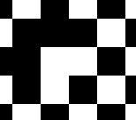
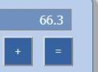

This repository contains some simple experiments I've used to help teach myself HTML, CSS, Javascript, D3, jQuery, and other libraries. Experiments are in reverse chronological order.
7. Programmable Game of Life Click on cells to set and unset them. Starts with a glider present.
6. Clickable chessboard: A simple use of the canvas element, as well as mouse events.
5. Mandelbrot set: Plotted using D3. Plots roughly 90,000 points, each one requiring some little effort. The points are then rendered as SVG rectangles. Unsurprisingly, it's quite memory- and CPU-intensive, and will take a few seconds to load. Despite this, I found myself impressed by how quickly 2014 browsers work. Note that reloading the process will eat up memory, so beware. Note also that the rendering can be streaky, due to non-overlap of SVG rectangles. I've chosen the dimensions so this doesn't happen, at least in my browser, but it's easy to alter the dimensions so that's not true. The cause is an architectural mistake on my part: my program computes the function in the underlying mathematical space — i.e., the "natural" co-ordinates used to explain the Mandelbrot set — and then transforms to screen co-ordinates. It would have been better to start from screen co-ords, transform to the mathematical space, compute the function, and transform back. That would make it easier to fit the rectangles snugly up against one another. This is worth keeping in mind for any D3 visualization whose aim is to output shapes which fit snugly up against one another. For most visualizations it shouldn't be an issue.
4. First-person engine: I worked through Hunter Loftis's great tutorial. The credit is his, apart from any mistakes I've introduced!
3. Calculator: Handles simple calculations, not well tested, and doesn't handle exceptions properly. An exercise in playing with buttons.
2. Game of Life: uses jQuery and jQuery UI to add a slider plus a few other elements.
1. Game of Life: implemented using D3.